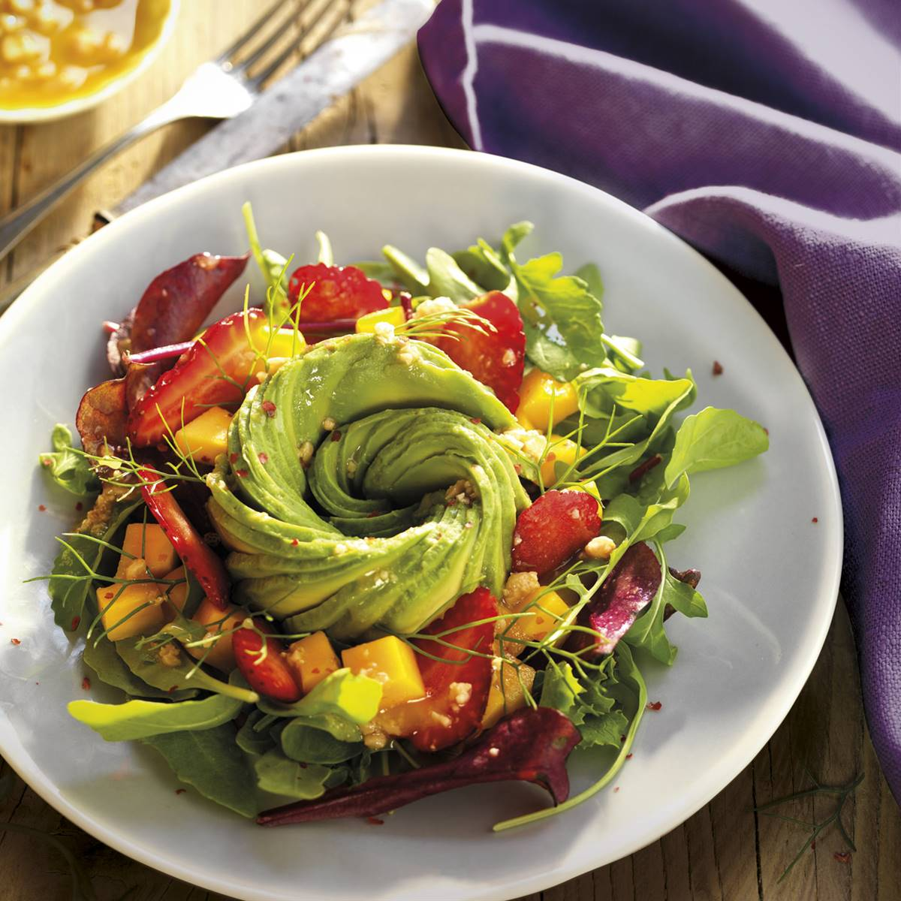

Ensalada Mediterránea

Atún fresco con hojas verdes.
Explorá ingredientes y técnicas de la cocina vegetariana mientras aprendés de manera práctica y dinámica.
Empezar ahora
Conocé los materiales, ingredientes y utensilios que vas a utilizar.

Atún fresco con hojas verdes.
Desafía lo que sabés y aprendé algo nuevo en cada juego.
Armá tu combinación ideal y compartila.